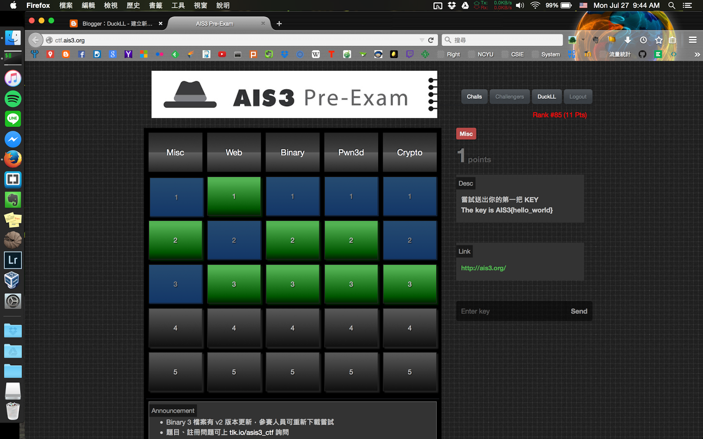
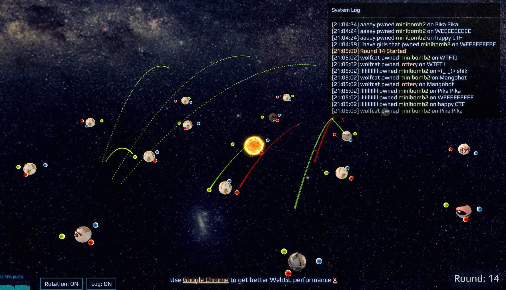
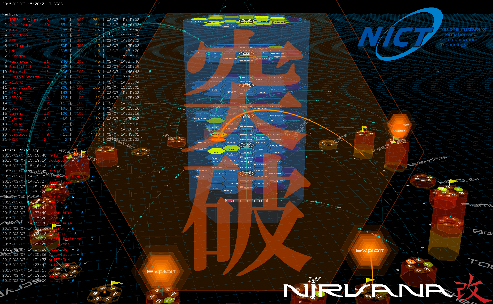

雲端資訊安全
-深入淺出資訊安全
2015.10.15
廖子慶
- 資安=駭客?-了解資訊安全
- 第一次破解就上手-實作與講解
- 第一次破解就上癮-技巧示範
駭客？
資訊安全？
Hacker
v.s.
Cracker
Windows
OSX
Linux
c/c++
java
perl
python
ruby
php
asp
node.js
android
ios
arduino
Raspberry Pi
想要成爲駭客只需要精通一門
但想要成爲資安專家就要樣樣精通
資訊安全的特殊性(ref:bambofox)
-
快速演進
- 任何新技術，都可能有資安方面的問題
- 資安研究需要快速瞭解吸收新知
-
與系統高度相關
- 資安技術無法單獨存在，皆須依賴所針對的系統，如：網站，機器
- 資安研究需要精通所針對的系統
-
木桶理論
- 系統安全性取決於安全層級最弱的一環
- 資安研究員需要全面性分析系統安全性
破壞性思維
- 攻擊者思維方式與程式設計師不同
- 資安研究員需要瞭解攻擊者的手法
Orange:
看一個人是否適合做安全技術研究，
主要看三點，按重要程度排序就是：
思路靈活、興趣濃厚、基礎紮實。
- 思路最重要，因為這個很難培養。
- 基礎也很重要，但這是三點中唯一可以通過勤奮來彌補的。
- 把興趣排在第二，是因為有些人可能沒接觸過，不知道自己對這個有興趣， 類似「不試試怎麼知道自己不喜歡男生」。
我們先把資安簡單分類一下
電腦
- Windows
- OSX
-
Linux
- 漏洞發覺、利用(Explorer, DLL Injection)
- 惡意程式分析(病毒、木馬、蠕蟲)
- 遊戲外掛程式
手機
- Android
-
iOS
- 跟電腦差不多
- 重點：隱私資料搜集
跨平台
-
Web
- SQL Injection
- XSS
- Fileupdate
- Remote Access Terminal
-
各種程式語言
- 程式撰寫漏洞(BOF, UAF)
- Jump out the sandbox.
密碼學
- 對稱式加密(AES)
- 非對稱式加密(RSA)
- 雜湊(MD5)
- 數論、幾何
數位鑑識
- 封包分析
- 破解壓縮擋
- 憑證存取
- 資料隱藏
其實很多種狀況是要Combo的
利用sqlinjection登入，找到一個任意upload的地方，利用系統漏洞提權，成功取得後門
該如何起手呢
學習面向(ref:bambofox)
- 系統化學習
- 課程 幫助你快速了解一門學問
- 讀書 讓你有系統的看見一門學科的全貌
- 深入學習
- 新聞 及技術文章讓你初步接觸最新的研究發展
- 論文 深入探討最新的研究
- 實作技術練習
- 練習 讓你真正了解體會這門學科
- 競賽 提升你的程度，讓你有機會突破自己的極限
重點在自學
最快的學習方式-CTF
What is CTF?
Capture The Flag
題型
- Web
- Binary
- Crypto
- Pwn
- Misc
比賽種類
- Jeopardy
- Attack & Defense
- King of Hill
Jeopardy
多人線上
解題
HITCON CTF, Defcon CTF Quals
Attack & Defense
少隊內網連接
保護自己、攻擊別人
Defcon CTF Fianl, 台交攻防賽
King of Hill
少隊內網連接
一起打好幾台機器
Honeyme, Seccon CTF
Why ctf?
Tyler: If you like security, just play ctf!
CTF網站
不知道怎麼開始？

當然是看實況呀
不過通常是Write Up拉
菁英級
orange (web)
x43x61x69(Zhi-Wei Cai) (web osx)
大師級
ddaa
atdog
jeffxx
dm4
hwchen18546
angelboy
sean (bin)
l4ys
鑽石級
bruce30262 (bin)
steven5538
inndy (new star)
adr (windows)
戰隊
217
bambofox
hst.tw
NSYSU CTF
UCCU
網站
烏雲
Hacknews
kb.hitcon
91Ri.org
freebuf.com
FB
Blog
Github
RSS
is the powerful tool!
除了實況還可以
看武功秘笈
基礎心法
- Linux
- C++
- Python
- PHP
Web
網路竟然這麼危險！
Web 2.0 駭客技術揭密
Binary
加密與解密
逆向工程核心原理
Crypto
Cryptography and Network Security
請去修資訊安全
Pwn
0day安全
Hacking: The Art of Exploitation
Kali Linux滲透測試工具
BOFMisc
ACM
提升程式設計的解題思考力
還有一個很棒的方法
參加各式研討會
HITCON, HoneyCon ...
參加各種 公開 社群
TDOH, HST, RAT ...
中場休息 10min
實作WEB題
SQL injection
首先要知道SQL是什麼
一個動態網站通常都會需要資料庫
用來管理會員資料、商品資訊...
而資料庫使用的程式語言通稱為SQL
介紹重要指令
-
動作
- SELECT
- INSERT
- DELETE
- 介詞 FROM
- 過濾運算 WHERE
- 註解 --
SELECT * FROM member WHERE id='admin' and pass='123456' -- <(_ _)>SQL injection是怎麼發生的
IF(SELECT * FROM member WHERE id='[arg1]' and pass='[arg2]') //有查到東西
login_seccess([arg1]); //登入成功
else
login_error(); //登入失敗正常情況應該是這樣
arg1=admin arg2=123456
IF(SELECT * FROM member WHERE id='admin' and pass='123456') //有查到東西但駭客就是不正常?!
arg1=admin arg2='or'1'='1
IF(SELECT * FROM member WHERE id='admin' and pass=''or'1'='1') //也有查到東西注意到什麼了嘛!
WHERE id='admin' and pass=''or'1'='1'
'1'='1'//恆成立
true and false or true // true!!!我根本不需要知道密碼啊
DEMO
siteYour time
http://duckliao.lionfree.net/sqlinjection- Basic: Try to login the site.
- Advance: Get the "message" of admin(this is hard).
- Don't delete the admin acount
中場休息 10min
數位鑑識
檔案辨識
file
破解壓縮檔(明文攻擊)
pkcrack
靜態分析
IDA Pro
動態分析
Immunity Debug
讀書會之後的發展
時間：
- 星期四晚上 17:30~20:30
- 星期六早上 9:00~12:00
三人一組
- Web - 調查:whois, directory traversal 攻擊:sqlmap XSS
- Binary - IDA-Pro, Immunity Debug
- Misc - Wireshark, Burp Suite
- PWN - gdb, BufferOverFlow, ShellCode
- Crypto - AES, RSA, MD5
- NCYU-CTF
注重工具上的操作
最後...
台灣是有法律的
詳見刑法358~363駭客不是當一個壞人
駭客是一種精神
END
謝謝大家